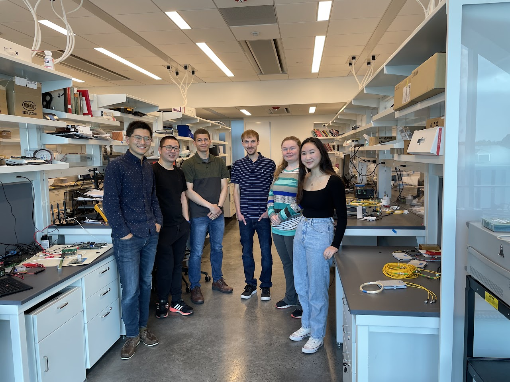
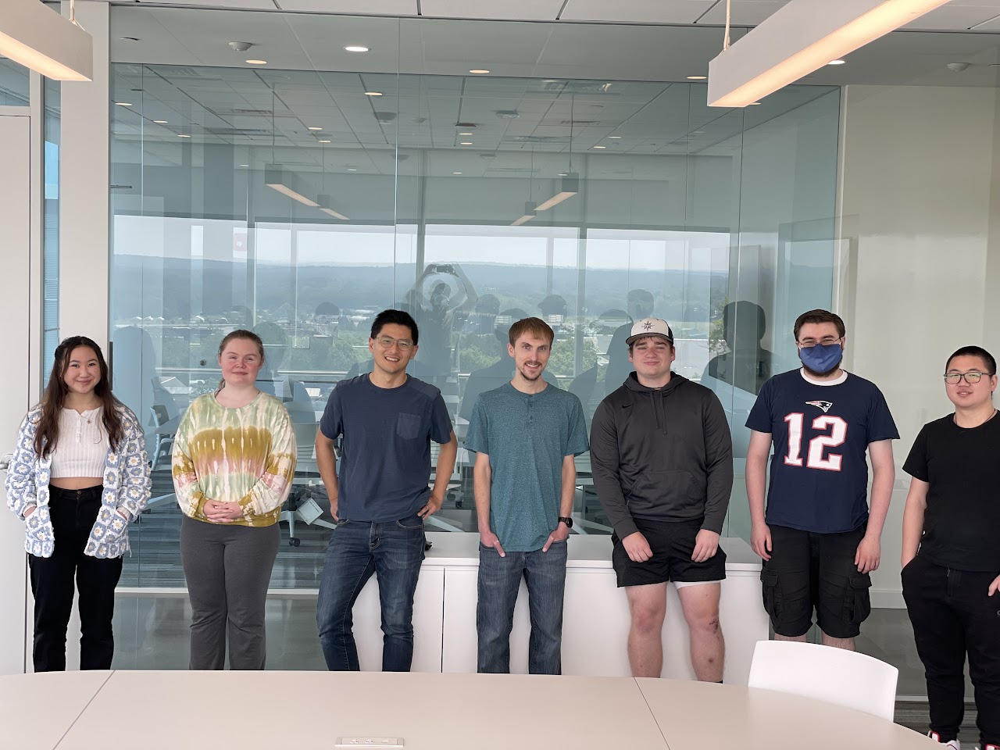
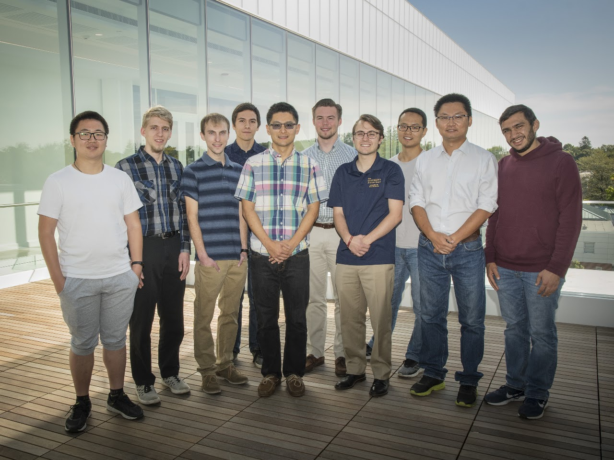

Undergraduate Researchers
We are actively recruiting undergraduate researchers in reconfigurable computing and AI systems.
Clemson University · NEXT Lab
Next Generation Computing and Sensing Lab
We build efficient systems for Generative AI models inference and training (LLM, VLM, ASR, Omni, ImageGen, etc.), advance domain-specific architecture (DSA) design for scientific computing, and develop mixed-signal circuit solutions (analog, digital, and optics) for sensing systems.



We are actively recruiting undergraduate researchers in reconfigurable computing and AI systems.
Start your application at Clemson Graduate Admissions: Apply Here.
For follow-up, prepare your CV and research interests for faculty review and discussion.